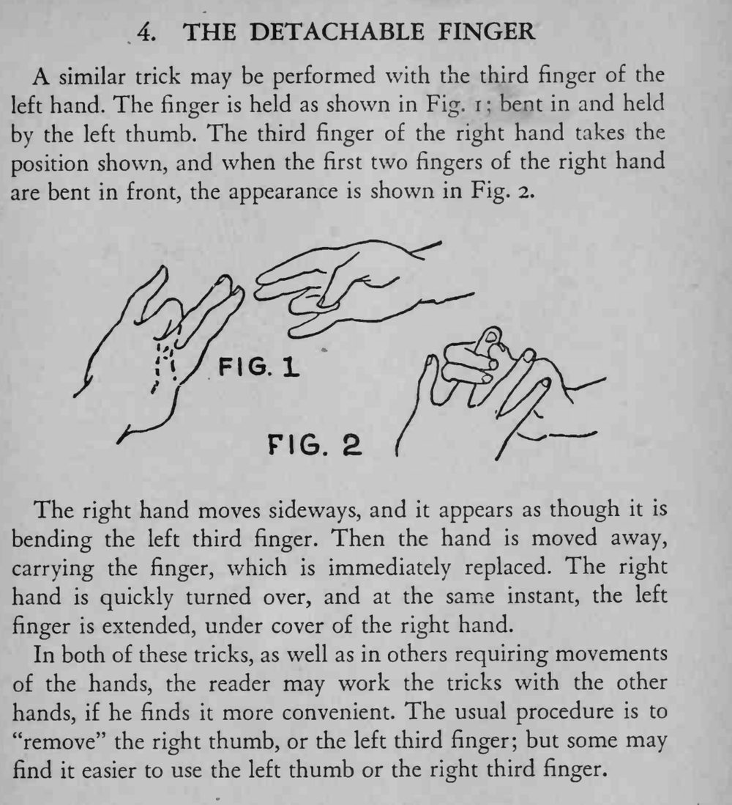

魔术师抓住自己的左手无名指，像拧螺丝一样把它掰弯、取下来移开，随后手指又完好无损地接了回去。
左右手可以互换，选自己顺手的一侧练熟即可。

A similar trick may be performed with the third finger of the left hand. The finger is held as shown in Fig. i bent in and held by the left thumb. The third finger of the right hand takes the position shown, and when the first two fingers of the right hand are bent in front, the appearance is shown in Fig. 2. The right hand moves sideways, and it appears as though it is bending the left third finger. Then the hand is moved away, carrying the finger, which is immediately replaced. The right hand is quickly turned over, and at the same instant, the left finger is extended, under cover of the right hand. In both of these tricks, as well as in others requiring movements of the hands, the reader may work the tricks with the other hands, if he finds it more convenient. The usual procedure is to "remove" the right thumb, or the left third finger; but some may find it easier to use the left thumb or the right third finger.